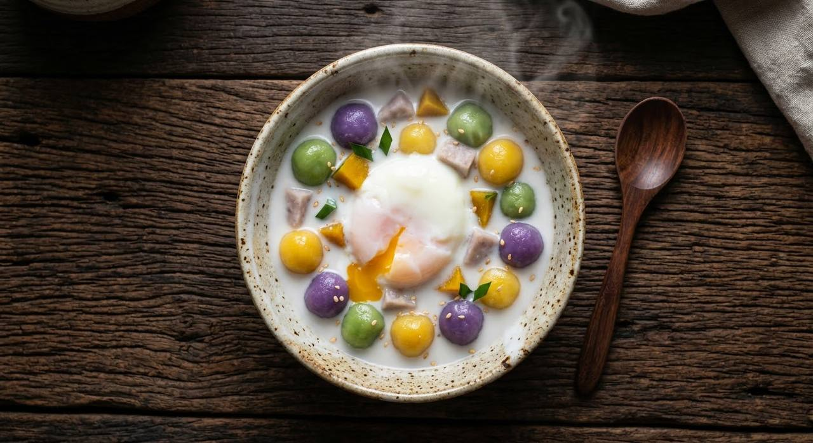

Soft glutinous-rice balls in taro, pumpkin and pandan colours, floating in salted-sweet coconut milk — with a sweet egg for those who want it.

บัวลอย — "floating lotus" — is named for the moment the rice balls rise to the surface of the boiling water. It's the Thai dessert built on one humble ingredient: แป้งข้าวเหนียว, glutinous rice flour, kneaded with water and coloured with whatever the kitchen has — steamed taro for purple, pumpkin for yellow, pandan water for green. No filling, no gimmick; the balls are the dessert, carried by the coconut milk.
The Kapook source's classic is บัวลอยไข่หวาน — the version with a sweet egg. The egg is poached directly in the sweetened coconut milk until it sets soft, then served whole on the bowl, so the yolk breaks into the dessert like a sauce. The coconut milk itself is barely cooked — sugar and salt dissolved in, one boil, off the heat — because boiling coconut milk for long splits it.
The cooking order matters, and the source is explicit: the balls are boiled in plain water, colour by colour, and only dressed with the coconut milk in the bowl. Boiling them in the coconut milk would cloud it with starch. Then the discipline of the name — the balls are ready when they float.
| Thai | English | Amount |
|---|---|---|
| แป้งข้าวเหนียว | Glutinous rice flour | 1 cup |
| น้ำเปล่า | Water | ¼ cup |
| เผือกนึ่งสุก | Steamed taro, mashed (purple) | as needed |
| ฟักทองนึ่งสุก | Steamed pumpkin, mashed (yellow) | as needed |
| น้ำใบเตย | Concentrated pandan water (green) | as needed |
| กะทิ | Coconut milk | 1 cup |
| น้ำตาลทราย | Sugar | 1 cup |
| เกลือป่น | Salt | 1 tsp |
| ไข่ไก่ | Eggs (for the sweet egg) | 2–3 |
No taro or pumpkin handy? The source says food colouring works — the natural colourings are preferred, not required. Aroifin's 5-colour version adds two more natural colours to the same dough and coconut-milk base.
How many colours. Kapook's classic runs three natural colours (taro, pumpkin, pandan); Aroifin's Feb 2026 recipe runs five. The balls are the same; more colours is the newer habit.
Sweet egg or not. บัวลอยไข่หวาน includes the coconut-milk-poached egg; plain bua loy skips it. The egg version is the richer, more traditional serve.
Coconut milk or ginger syrup. Kapook's roundup also covers บัวลอยน้ำขิง — the same balls in a ginger syrup instead of coconut milk. Both are traditional; coconut milk is the default.
Filled balls. Wongnai's 15-recipe roundup includes filled variants (custard, salted egg yolk). The classic is unfilled — the fillings are the dessert-shop evolution.
Natural or bottled colour. Every source prefers natural colourings but explicitly allows food colouring when taro, pumpkin or pandan aren't available.
This recipe is translated from the following Thai-language sources. Where they disagree, we've said so.
1. Kapook — "7 สูตรบัวลอย ขนมไทยปั้นความสนุกใส่หม้อ" (the recipe used here — three natural colours, sweet egg) — cooking.kapook.com
2. Aroifin — "วิธีทำ บัวลอยไข่หวาน 5 สี เนื้อนุ่มเด้งดึ๋ง ราดน้ำกะทิหวานฉ่ำ" (5-colour version, Feb 2026) — aroifin.com
3. Wongnai — "15 สูตร ขนมบัวลอย เมนูขนมไทยรสหวานยอดฮิต ทำง่ายๆ ทำขายปัง" (the roundup incl. ginger-syrup and filled variants) — wongnai.com